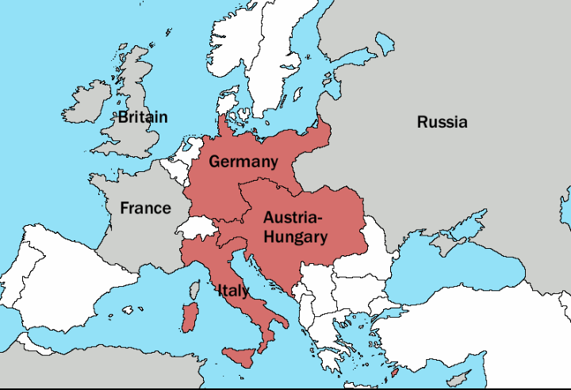

სამთა კავშირი — გერმანიის, ავსტრია-უნგრეთისა და იტალიის ბლოკი. საფრანგეთისაგან კონტრიბუციის მიღებისა და გერმანიის ჯარების გაყვანის შემდეგ ბისმარკმა მიიჩნია, რომ მესამე რესპუბლიკის სამხედრო სიძლიერის აღდგენა მოსალოდნელთან შედარებით სწრაფად ვითარდებოდა. ამიტომ მან მოინდომა საფრანგეთთან ახალი ომის დაწყება, მაგრამ ამის საშუალება მას არ მისცეს რუსეთმა და დიდმა ბრიტანეთმა. საკუთარი ინტერესებიდან გამომდინარე, მათ ხელს არ აძლევდა საფრანგეთის ხარჯზე გერმანიის შემდგომი გაძლიერება.
ბისმარკი შეუდგა რთულ დიპლომატიურ თამაშს. მისი მიზანი იყო დიდი ბრიტანეთისა და რუსეთის ურთიერთდაპირისპირება, რათა მათთვის საშუალება მოესპო მხარი დაეჭირათ საფრანგეთისთვის გერმანიასთან ომის შემთხვევაში.
ბისმარკმა განიზრახა სამხედრო კავშირის ჩამოყალიბება გერმანიის ხელმძღვანელობით. 1879 წელს გერმანიამ და ავსტრია-უნგრეთმა, რომელიც ძლიერი მფარველის მოძებნას ცდილობდა, ხელი მოაწერეს რუსეთის საწინააღმდეგოდ მიმართულ საიდუმლო სამოკავშირეო ხელშეკრულებას. ბისმარკმა ისარგებლა საფრანგეთის კოლონიური იმპერიის გაფართოებისაკენ მისწრაფებით და წააქეზა მესამე რესპუბლიკა, დაეპყრო ტუნისი, რომელზედაც თვალი ეჭირა იტალიას. საფრანგეთის მიერ განაწყენებულმა იტალიამ საიდუმლო წარმომადგენლები გააგზავნა ბისმარკთან ანტიფრანგული კავშირის დასადებად. ბისმარკმა იტალიის წარმომადგენლებს განუცხადა, რომ გზა რომიდან ბერლინისაკენ ვენაზე გადის. ავსტრია-უნგრეთის მიმართ ტერიტორიული პრეტენზიების მიუხედავად (იტალიის ტერიტორიულ პრეტენზიებს შორის ავსტრია-უნგრეთის მიმართ ყველაზე მნიშვნელოვანი იყო პრეტენზია სანავსადგურო ქალაქ ტრიესტზე), იტალია იძულებული გახდა შეერთებოდა გერმანია-ავსტრია-უნგრეთის კავშირს. 1882 წელს გერმანიასა და იტალიას შორის დაიდო საფრანგეთის წინააღმდეგ მიმართული საიდუმლო ხელშეკრულება. ამგვარად შეიქმნა 1879-1882 წლებში საიდუმლო სამთა კავშირი.
რამდენიმეჯერ ვადის გაგრძელების შემდეგ სამთა კავშირმა 1915 წლამდე იარსება. ამის მიზეზი იტალიის უარი იყო დახმარება გაეწია მოკავშირეებისთვის, როცა მათ ომი გამოუცხადეს დიდ ბრიტანეთს.
